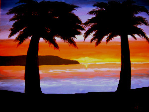
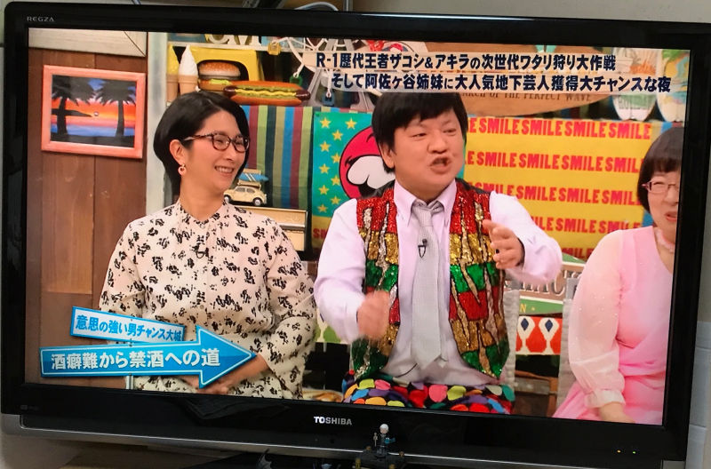
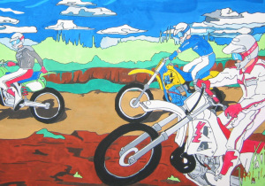
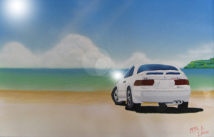

ログイン
ログインスケッチブックの中身
20代の頃は暇な時間がいっぱいあってラクガキたくさん描いてました。今もバースデーカードとか、絵日記とかを描いて日々の思い出を残しています。
２０才のとき、入院半年通院２年の痛い思い出。これ以来バイクに乗るのを自粛。でもこれがきっかけで、よくある入院先での一生に一度の出会いが待っていたので、決して嫌な思い出だけではないのです。
1998.10.10。カラーインク。Ｂ6。

会社の女性活動月間ポスターに応募する為、急遽１日で描いたので背景を入れる時間が無かったのが残念。元気はつらつ、少年っぽい女の子を表したかったんだけど、そう受けとってくれるかなぁ。乗ってみたいなー、スーパーセブン。
1997.3.16。ポスターカラー。Ｂ４。

この年、信州に行ってきました。とある駐車場の隅に無造作に且つ計算されてかぼちゃが並べられていました。丁度夕暮れ時に見たので、辺りはオレンジ色、秋を彷彿させる景色でした。一目見た瞬間、「ああ、描いてみたいぃ」という衝動にかられました。
1997.1.11。色鉛筆で制作。Ｓ８８。

「ヤマハＦＺＲ」です。このバイクには約２年間乗っていました。二十歳の誕生日を６日前に控えたある晴天の日、気持ちよく飛ばしていたがバイク共々、某ドイツ車に激突。１８３日の入院生活と２年間の通院生活をおくることになりました。悲しいことにバイクで走っている写真が一枚も無かったので、楽しかったあの日を忘れないようにと描きました。
1990.11。色鉛筆。Ｓ８７。

この頃はまだ見ぬ南国の海を夢見て描きました。雑な絵なんだけど見てると落ち着くんだよなあ。なんでだろ？そうそう、この絵は病院で描いたんだっけ。部屋中、絵の具臭くなっちゃったっけ。でも海行きたかったんだもん。早く外に出たかったんだもん。
1990.11。水彩絵の具。Ｓ８７。

びっくりしたあ。たまたま土曜日の夜、チャンネルをかちゃかちゃとザッピングしてたら、ちらっと見たことがある絵が！。本当に目をこすって確認したけど、あれーっ。自分の絵だぁ。うれしいな、美術さんが選んでくれたのかな、ありがとう「さんまのお笑い向上委員会」フジテレビ。2020年毎週土曜日、番組のセットに自分の絵画が映る。

「モトクロスチームWASTE」のポスターです。実はモトクロスもやってました。草レースにも数回参加したことあります。お遊び程度ですが．．．。学園祭でこの絵のＴシャツを作って売って頂いたこともあります。メンバーはこれ見たら連絡してね。
1991.1.29。ポスターカラー。Ｓ８７。

浦安で走ってた頃をイメージしたのかな、たしか。この頃、友達からもらったハートカクテルを読んで、わたせせいぞうのファンになりました。だからこういう色づかいになったわけです。でも思った通りの発色にならなくて悲しかったなあ。当時乗っていたヤマハ「YZ250」と仲間たち。
1991.1。ポスターカラー。Ｓ８７。

ずーっと海の近くに住んでいたんだけど、会社にはいって青梅で暮らすようになってから滅多に海が見れなくなりました。そこで部屋に貼れる海の景色のポスターを探し廻ったんだけど、気に入ったのが無くて「よしっ、なら自分で作るかあ」ってわけで、制作しました。絵の車は当時乗っていたトヨタ「トレノGT-Z」。
1994.6。ポスターカラー。Ａ２。

最初に乗ってたバイクはカワサキのニンジャって呼ばれてたGPZ400R。ごっつくて重たくて男らしいバイクでした。その頃の写真が一枚も無いので思い出に書きとめました。
1989.12。色鉛筆。ハガキ。

★最後まで観てくれてありがとう。
 エアブラシで描いたイラスト
エアブラシで描いたイラスト |